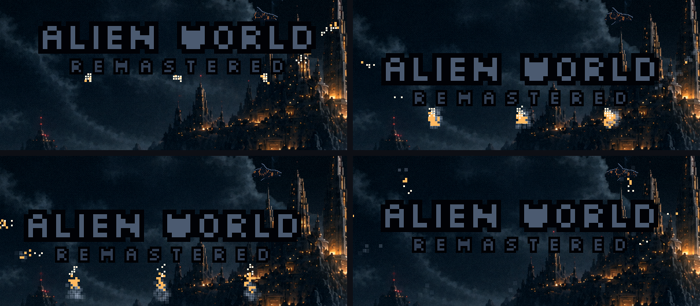
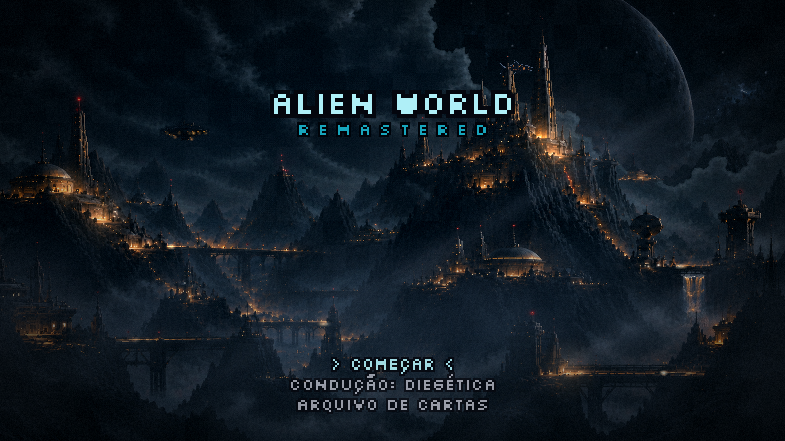
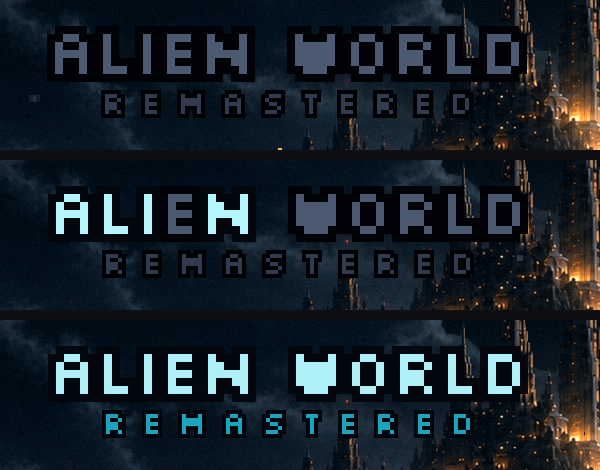

Menu refeito · rodada 6 · o título-foguete
19/10/2026. ← rodada 5 · As suas escolhas: a logo é o próprio título (A), um letreiro que acende; os estabilizadores são os de foguete (jatos que freiam e corrigem); e o título desce mais, para perto do centro.
A abertura
| 0 – 1,2 s | O véu sai. |
| ~2 s | O Leviatã sai da nuvem. |
| 3,5 s | O título entra caindo de fora da tela, apagado (metal escuro), em queda livre. |
| 3,9 s | Os retrofoguetes acendem embaixo e freiam a queda. Ele passa um pouco do ponto, e um sopro de cima o devolve. Os jatos laterais corrigem a deriva. Firma em ~5,3 s. |
| 5,1 s | A lista desce em formação, sem jatos (os jatos são do título). |
| ~6,4 s | A lista pousa, e o menu aceita teclas. |
| 6,6 s | O letreiro acende letra por letra, cada uma piscando antes de firmar, como as janelas da cidade. O REMASTERED acende depois (~7,7 s). |
Os retrofoguetes

O letreiro acendendo


A posição
O título desceu de 4% para cerca de 20% da altura da tela, nas nuvens entre a torre da esquerda e a cidadela. O Leviatã agora passa acima dele, com o caminho livre.
Sobre o corte: o jogo usa o modo FIT, então a imagem inteira sempre aparece. Se a proporção da tela for outra, entram faixas pretas, sem nada cortado. Mesmo assim, a margem nova é melhor: título colado na borda incomoda em qualquer tela.
Hoje o título encosta nas agulhas da esquerda da cidadela. Se o seu letreiro tiver até ~320 px de largura na tela de 1536, ele cabe livre entre a nave e a cidadela; se for mais largo, passa por cima delas, como agora.
O que ainda espera por você pendências
- A condução numa linha só (rodada 5): "CONDUÇÃO: DIEGÉTICA" na lista, ←→ trocam, a descrição só com o cursor nela, e 1/2/3 como atalho. Aprova?
- O teste da resolução no seu monitor (rodada 4, F11): ficou bom?
- Quem faz o letreiro: você pinta (eu passo o prompt em inglês, o tamanho e as duas versões, apagada e acesa), ou eu gero 3–4 bases para você trabalhar por cima. E o REMASTERED entra no letreiro ou continua como texto?
- O Leviatã depois da travessia: hoje ele cruza uma vez e some. No menu novo a travessia leva ~40 s. Depois disso ele some de vez, ou volta a cruzar de tempos em tempos (por exemplo, a cada 1–2 minutos)?
- O vídeo: os 3,5 s de espera, a força dos jatos e o tempo do acender estão bons?